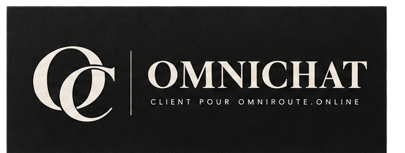
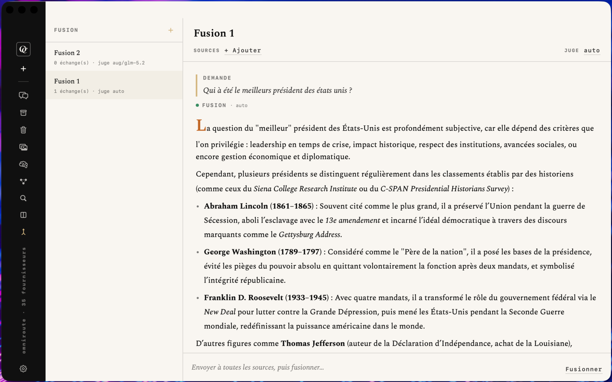

« Une passerelle, trois cent quarante fournisseurs. » Un client macOS natif pour OmniRoute, pensé comme un atelier d'imprimerie plutôt qu'un chatbot générique.
OmniChat exploite OmniRoute, une passerelle IA open-source agrégeant plusieurs centaines de fournisseurs de modèles derrière une API compatible OpenAI.
Streaming, routage automatique ou modèle choisi par conversation, trace de routage et coût réels par réponse.
Images, vidéo, musique, synthèse et transcription vocale — rendu inline et galerie dédiée.
Navigateurs réels de la mémoire serveur et du serveur MCP embarqué d'OmniRoute.
Indexation manuelle de l'historique, recherche sémantique et par mots-clés, contexte attaché au message suivant.
Un même prompt envoyé à N modèles, réponses indépendantes affichées côte à côte.
N modèles sources interrogés en parallèle, synthétisés par un modèle juge — auto ou choisi.
Panneau à huit pages : fournisseurs & clés, santé, agents, garde-fous, réseau, analytique & coûts.
Santé des fournisseurs et dernière réponse routée, sans quitter la barre de menu.

Direction éditoriale « atelier d'imprimerie » : papier et encre calés sur la charte de marque, serif Spectral, monospace tracké en majuscules pour les labels.